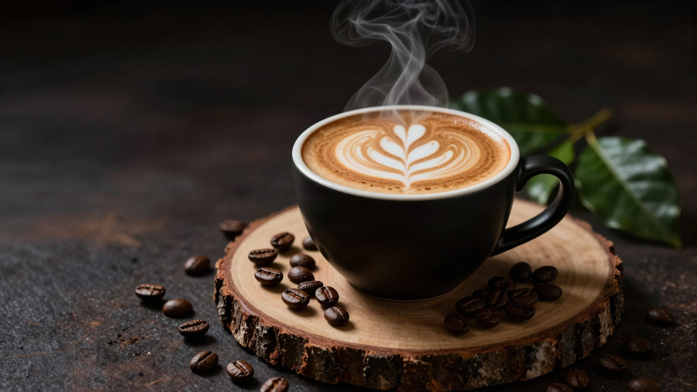
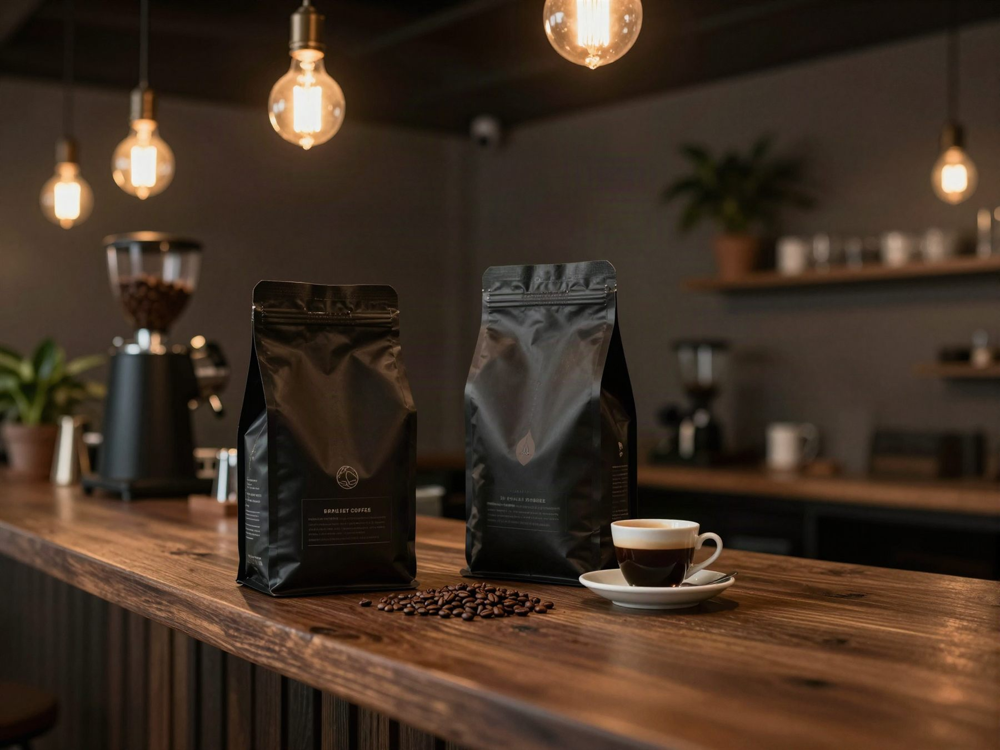
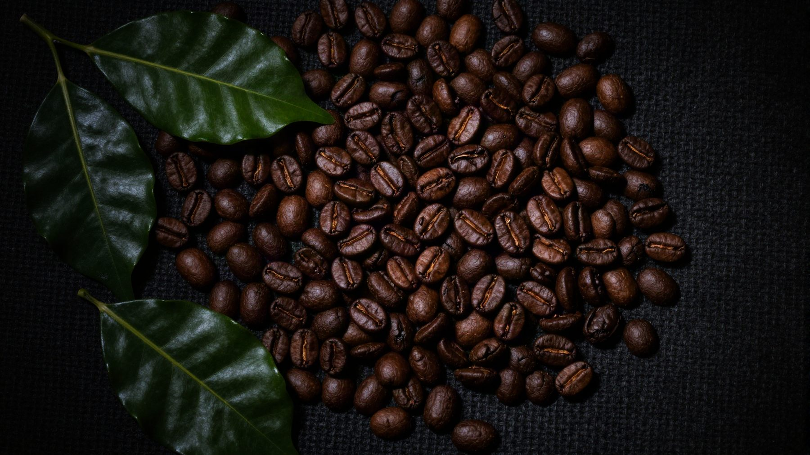
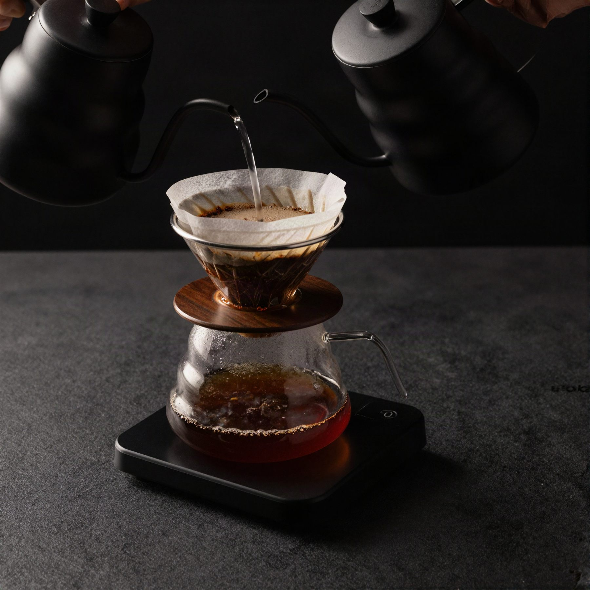

Rico. Suave. Perfecto.
Vive el café
como nunca
antes
Café de origen colombiano del Cauca, Huila, Nariño y el Valle, tostado en pequeños lotes y servido en azul, desde Cali.
- Granos
de origen - Tostado
por lote - Hecho con
cariño caleño

Sobre nosotros
Más que solo
un café
En Coffee Blue creemos que el café es más que una bebida: es un origen, una finca y una mañana. Cada taza dice de dónde viene, con trazabilidad del productor a tu mesa.
- ✦Granos de origen colombiano
- ✦Trazabilidad por finca y lote
- ✦Tostión fresca con fecha visible
- ✦Preparado por baristas

Café en bolsa
Cuatro regiones,
una taza azul
Elige tu origen en grano o molido. Cada bolsa trae lote y fecha de tostión.
En casa
El ritual del
filtrado
- 01
Elige tu origen
En grano o molido según tu método.
- 02
Tostamos por lote
Cada bolsa indica lote y fecha de tostión.
- 03
Lo despachamos
Empacado con válvula para conservar el aroma.
- 04
En tu taza
Con guía de preparación para cada método.

Envíos en ColombiaAl activar la tienda
Fresco y rápidoPreparado con cuidado
Fecha de tostiónVisible en cada bolsa
Club BlueMuy pronto
Dudas
Preguntas frecuentes
¿El café es en grano o molido?
Ambos: elige grano para moler en casa o molido según tu cafetera.
¿Puedo devolverlo?
Por ser alimento no admite retracto una vez abierto; si llega dañado o vencido, lo reponemos.
¿Tiene registro sanitario?
Se publica en cada bolsa al obtenerlo; hoy está en trámite.
¿Hacen envíos?
En Colombia, en cuanto conectemos la tienda y las transportadoras.